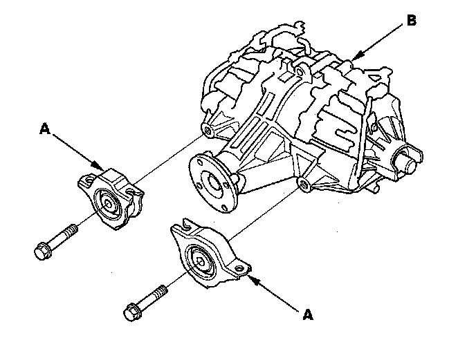
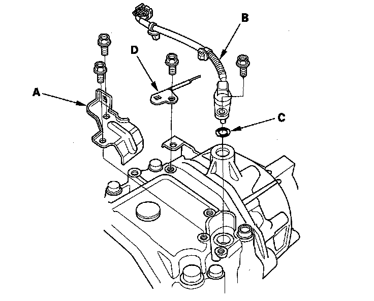
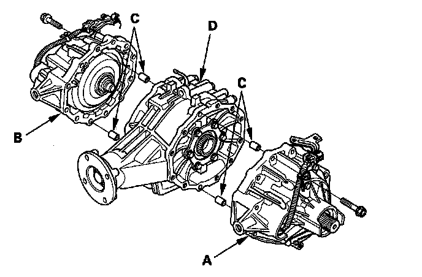
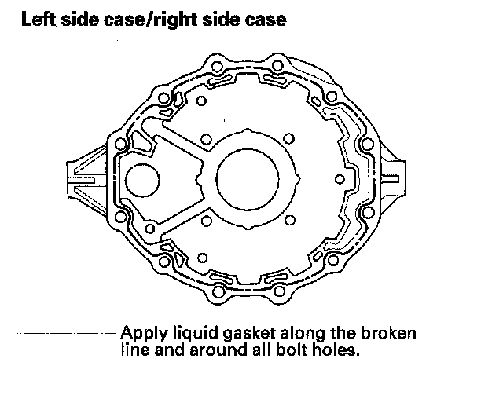
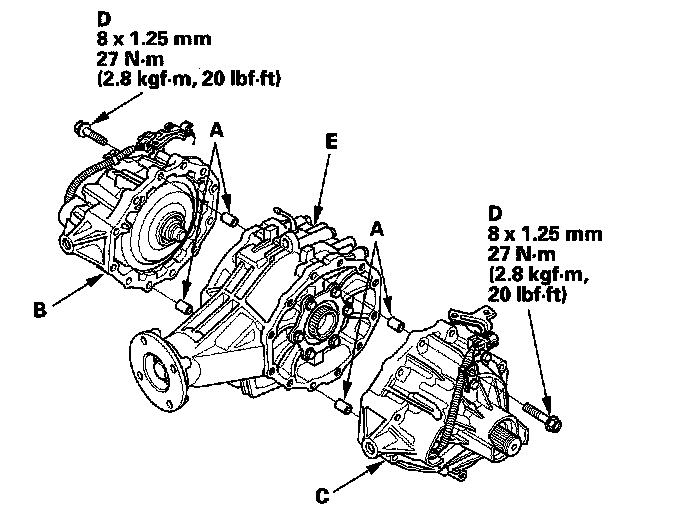
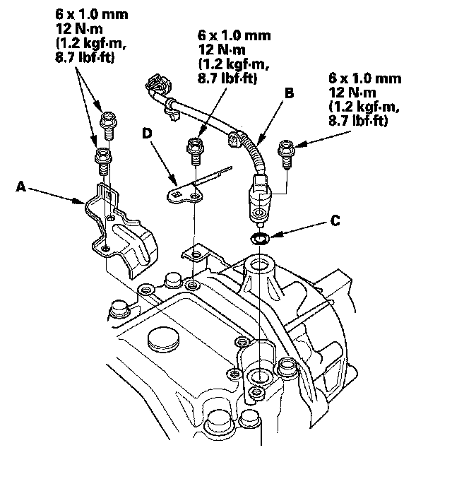
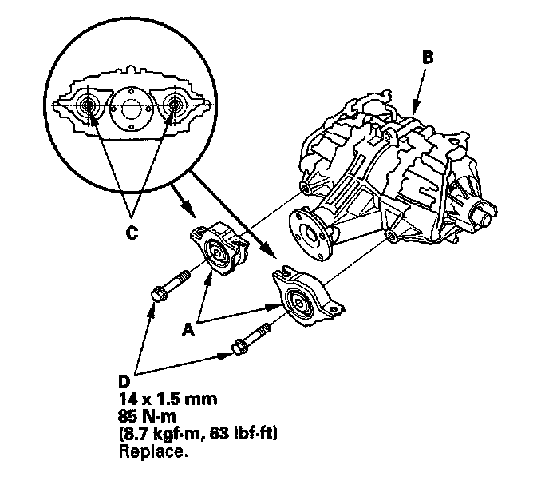

Center Case Replacement
Center Case Replacement1. Remove the rear differential.
2. Remove the rear differential front mounting brackets (A) from the rear differential (B).

3. Remove the differential fluid temperature sensor cover (A) rear differential fluid temperature sensor (B) O-ring (C) and rear differential harness bracket (D).

4. Remove the rear differential left side case (A) the rear differential right side case (B) the 10 x 12 mm dowel pins (C) from the rear differential center case (D).

5. Replace the rear differential center case.
6. Remove the dirt and oil from the sealing surfaces. Apply liquid gasket (P/N08718-0001) to the sealing surface. Make sure you seal the entire circumference of the bolt holes to prevent oil leakage.
NOTE:
- You must assemble the housings with you do in 5 minutes after applying the liquid gasket. If not, the sealing surface must be cleaned, and the liquid gasket reapplied.
- Allow it to cure at least 30 minutes after assembly before filling the differential with fluid.

7. Install the 8 x 12 mm dowel pins (A) the rear differential right side case (B) the rear differential left side case (C) and the mounting bolts (D) on to the rear differential center case (E).

8. Tighten the mounting bolts in a crisscross pattern in several steps.
9. Install the differential fluid temperature sensor cover (A) rear differential fluid temperature sensor (B) new O-ring (C) and rear differential harness bracket (D).

10. Install the rear differential front mounting brackets (A) from the rear differential (B).
NOTE: Install a lower surface of the guide (C) horizontally as shown, then tighten the rear differential front mounting bracket bolts (D).

11. Install the rear differential.
12. Refill the differential fluid.